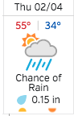

Introduction to Machine Learning and Data Mining
Kyle I S Harrington / kyle@eecs.tufts.edu
Some slides adapted from Tom Mitchell
Bayes Theorem
$P(h|D) = \frac{ P(D|h) P(h) }{ P(D) }$
$P(h) =$ prior probability of hypothesis $h$
$P(D) =$ prior probability of training data $D$
$P(h|D) =$ probability of $h$ given $D$
$P(D|h) =$ probability of $D$ given $h$
Priors
$P(h) =$ prior probability of hypothesis $h$
$P(D) =$ prior probability of training data $D$
Likelihood
$P(D|h) =$ probability of $D$ given $h$
Describes how likely the data is given the hypothesis
Posterior Probability
$P(h|D) =$ probability of hypothesis $h$ given $D$
Describes how confident we are in $h$ after seeing our training data $D$
Why is this exciting?
maximum a posteriori
A hypothesis that maximizes $P(h|D)$
$h_{MAP} \equiv \displaystyle argmax_{h \in H} P(h|D)$
$= \displaystyle argmax_{h \in H} \frac{P(D|h)P(h)}{P(D)}$
$= \displaystyle argmax_{h \in H} P(D|h) P(h)$
$H$ is our hypothesis space
Likelihood
If $P(h_i) = P(h_j)$ for all $h_i, h_j \in H$
Then what about the MAP hypothesis?
Maximum Likelihood
If $P(h_i) = P(h_j)$ for all $h_i, h_j \in H$
Then what about the MAP hypothesis?
$h_{ML} \equiv argmax_{h \in H} P(D|h)$
Gold detection!
Testing marbles during the gold rush
$P(gold) = 0.01$ and $P(junk) = 0.99$
Prof. Khardon's gold detector, $D$:
$P(D_{yes}|gold) = 0.98$ $P(D_{yes}|junk) = 0.04$
If a marble tests $D_{yes}$, should we buy it?
Adapted from Roni KhardonGold detection!
Testing marbles during the gold rush
$P(gold) = 0.01$ and $P(junk) = 0.99$
Prof. Khardon's gold detector, $D$:
$P(D_{yes}|gold) = 0.98$ $P(D_{yes}|junk) = 0.04$
$P(gold|D_{yes}) = P(gold) P(D_{yes}|gold)$
$P(junk|D_{yes}) = P(junk) P(D_{yes}|junk)$
Adapted from Roni KhardonGold detection!
Testing marbles during the gold rush
$P(gold) = 0.01$ and $P(junk) = 0.99$
Prof. Khardon's gold detector, $D$:
$P(D_{yes}|gold) = 0.98$ $P(D_{yes}|junk) = 0.04$
$P(gold|D_{yes}) = 0.01 * 0.98 = 0.0098 \implies 0.198$
$P(junk|D_{yes}) = 0.99 * 0.04 = 0.0396 \implies 0.802$
Adapted from Roni KhardonLearning with Bayes Theorem
How can we use Bayes theorem to search a hypothesis space?
$P(h|D) = \frac{ P(D|h) P(h) }{ P(D) }$
MAP learning
Brute force algorithm:
For each $h \in H$, calculate posterior probability:
$P(h|D) = \frac{P(D|h) P(h)}{P(D)}$
Then,
$h_{MAP} = argmax_{h \in H} P(h|D)$
MAP learning
We need to specify some values:
$P(h)$ and $P(D|h)$
MAP learning
Let's choose $P(h)$ and $P(D|h)$ based on the assumptions:
$D$ is noise-free
Target concept $c$ is contained in $H$
We have no a priori reason to favor any hypothesis
MAP learning
Let's start with $P(h)$
$c$ is contained in $H$ $\implies$ $\sum$ probabilities $ = 1$
We have no a priori reason to favor any hypothesis
$P(h) = \frac{1}{|H|}$ for all $h \in H$
MAP learning
Now $P(D|h)$
$D$ is noise-free
The probability of observing class $d_i$ given $h$ is 1 if $d_i=h(x_i)$, where $x_i$ is a tuple of attribute-values
otherwise, 0 if $d_i \neq h(x_i)$
Naive Bayes
Used to learn a function that maps a tuple of attribute values $(a_1, a_2, ... a_n)$ to a finite set of outputs $V$
Classify new instances to the MAP class/value given the attributes
Naive Bayes
Classification is the most probable value (MAP)
$v_{MAP} = argmax_{v_j \in V} P(v_j | a_1, a_2, ... a_n )$
Naive Bayes
$v_{MAP} = argmax_{v_j \in V} P(v_j | a_1, a_2, ... a_n )$
Rewrite according Bayes theorem
$v_{MAP} = argmax_{v_j \in V} \frac{ P(a_1, a_2, ... a_n | v_j ) P(v_j) }{ P(a_1, a_2, ... a_n ) }$
$v_{MAP} = argmax_{v_j \in V} P(a_1, a_2, ... a_n | v_j ) P(v_j)$
How do we get $P(a_1, a_2, ... a_n | v_j )$ and $P(v_j)$?
Naive Bayes
How do we get $P(a_1, a_2, ... a_n | v_j )$ and $P(v_j)$?
$P(v_j)$ is straight-forward
$P(v_j) = \frac{ |v_j \in D| }{ |D| }$, for dataset $D$
Naive Bayes
How do we get $P(a_1, a_2, ... a_n | v_j )$ and $P(v_j)$?
Why is estimating $P(a_1, a_2, ... a_n | v_j )$ the same way we did for $P(v_j)$ hard?
Naive Bayes
Estimating $P(a_1, a_2, ... a_n | v_j )$
This is where naive comes in
Naive Bayes assumes conditional independence!
Naive Bayes
Estimating $P(a_1, a_2, ... a_n | v_j )$
Conditional independence means the probability of observing a combination of attribute-values is the product of observing each attribute-value independently
$P(a_1, a_2, ... a_n | v_j ) = \displaystyle \prod_i P( a_i | v_j )$
Naive Bayes
Going back to our naive Bayes equation
$v_{MAP} = argmax_{v_j \in V} P(a_1, a_2, ... a_n | v_j ) P(v_j)$
Rewrite using our estimates:
$v_{NB} = argmax_{v_j \in V} P(v_j) \displaystyle \prod_i P( a_i | v_j )$
Example: Naive Bayes
Should we play tennis today?
Let's call this: ( Outlook = rainy, Temperature = cool, Humidity = high, Wind = weak )
Example: Naive Bayes
Do we play tennis today?
( Outlook = rainy, Temperature = cool, Humidity = high, Wind = weak )
$v_{NB} = argmax_{v_j \in V} P(v_j) \displaystyle \prod_i P( a_i | v_j )$
Example: Naive Bayes
|
$P( play_{yes} ) = $ $P( play_{no} ) = $ |
Example: Naive Bayes
|
$P( play_{yes} ) = \frac{9}{14}$ = 0.64 $P( play_{no} ) = \frac{5}{14} = 0.36$ |
Example: Naive Bayes
Do we play tennis today?
( Outlook = rainy, Temperature = cool, Humidity = high, Windy = false )
$v_{NB} = argmax_{v_j \in V} P(v_j) \displaystyle \prod_i P( a_i | v_j )$
Now we have our $P(v_j)$s
Example: Naive Bayes
|
$P( outlook_{rainy} | play_{yes} ) =$ $P( outlook_{rainy} | play_{no} ) =$ |
Example: Naive Bayes
|
$P( outlook_{rainy} | play_{yes} ) = \frac{3}{9} = 0.33$ $P( outlook_{rainy} | play_{no} ) = \frac{2}{5} = 0.4$ |
Example: Naive Bayes
|
$P( outlook_{rainy} | play_{yes} ) = \frac{3}{9} = 0.33$ $P( outlook_{rainy} | play_{no} ) = \frac{2}{5} = 0.4$ $P( temp_{cool} | play_{yes} ) = \frac{3}{9} = 0.33$ $P( temp_{cool} | play_{no} ) = \frac{1}{5} = 0.2$ $P( humidity_{high} | play_{yes} ) = \frac{3}{9} = 0.33$ $P( humidity_{high} | play_{no} ) = \frac{4}{5} = 0.8$ $P( windy_{false} | play_{yes} ) = \frac{6}{9} = 0.67$ $P( windy_{false} | play_{no} ) = \frac{2}{5} = 0.4$ |
Example: Naive Bayes
|
Do we play tennis today? $v_{NB} = argmax_{v_j \in V} P(v_j) \displaystyle \prod_i P( a_i | v_j )$ |
$P( play_{yes} ) = \frac{9}{14}$ = 0.64 $P( play_{no} ) = \frac{5}{14} = 0.36$ $P( outlook_{rainy} | play_{yes} ) = \frac{3}{9} = 0.33$ $P( outlook_{rainy} | play_{no} ) = \frac{2}{5} = 0.4$ $P( temp_{cool} | play_{yes} ) = \frac{3}{9} = 0.33$ $P( temp_{cool} | play_{no} ) = \frac{1}{5} = 0.2$ $P( humidity_{high} | play_{yes} ) = \frac{3}{9} = 0.33$ $P( humidity_{high} | play_{no} ) = \frac{4}{5} = 0.8$ $P( windy_{false} | play_{yes} ) = \frac{6}{9} = 0.67$ $P( windy_{false} | play_{no} ) = \frac{2}{5} = 0.4$ |
Example: Naive Bayes
|
Do we play tennis today? $v_{NB} = argmax_{v_j \in V} P(v_j) \displaystyle \prod_i P( a_i | v_j )$ $play_{yes}: P( play_{yes})$ $play_{yes} = 0.01541$ $play_{no} = 0.00922$ |
$P( play_{yes} ) = \frac{9}{14}$ = 0.64 $P( play_{no} ) = \frac{5}{14} = 0.36$ $P( outlook_{rainy} | play_{yes} ) = \frac{3}{9} = 0.33$ $P( outlook_{rainy} | play_{no} ) = \frac{2}{5} = 0.4$ $P( temp_{cool} | play_{yes} ) = \frac{3}{9} = 0.33$ $P( temp_{cool} | play_{no} ) = \frac{1}{5} = 0.2$ $P( humidity_{high} | play_{yes} ) = \frac{3}{9} = 0.33$ $P( humidity_{high} | play_{no} ) = \frac{4}{5} = 0.8$ $P( windy_{false} | play_{yes} ) = \frac{6}{9} = 0.67$ $P( windy_{false} | play_{no} ) = \frac{2}{5} = 0.4$ |
Bayesian ML in Real-life
Text-to-speech: What is the most likely word to follow another?
Image analysis: What objects are near other objects?
Medical diagnostics: What patient outcomes are most probable given the result of some tests?
Final Projects
Proposal due: March 7
Study a novel dataset with an advanced algorithm
Extend a ML algorithm
Do a comparative study of multiple algorithms
Final Projects
Due: April 25
Turn in a write-up (8-12 pages)
- Background on problem
- Related work
- Your method
- Results
- Conclusion and future work
- References
Should have at least 10 references
If multiple people, then more work is expected
What Next?
Measuring the success of a ML algorithm